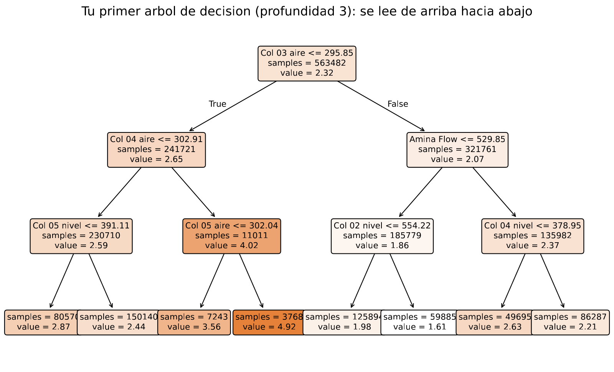
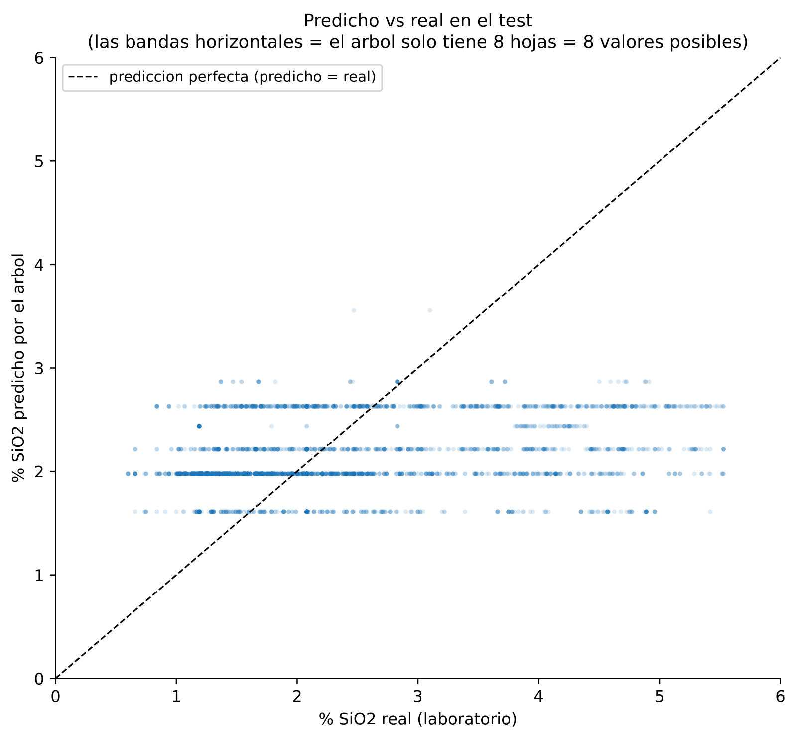
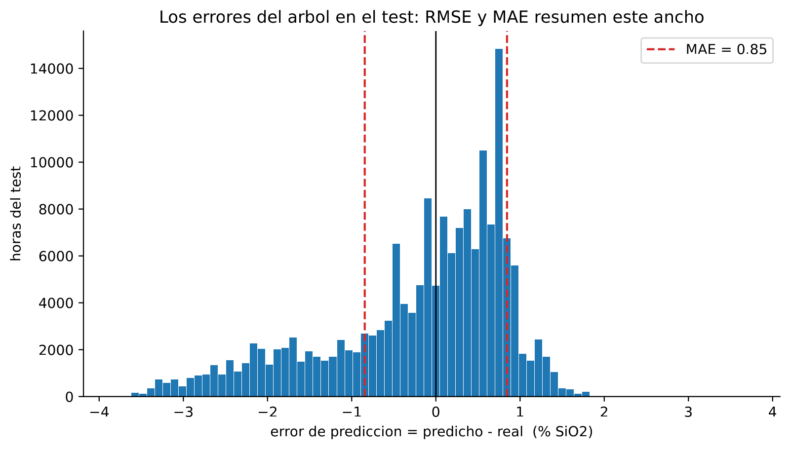
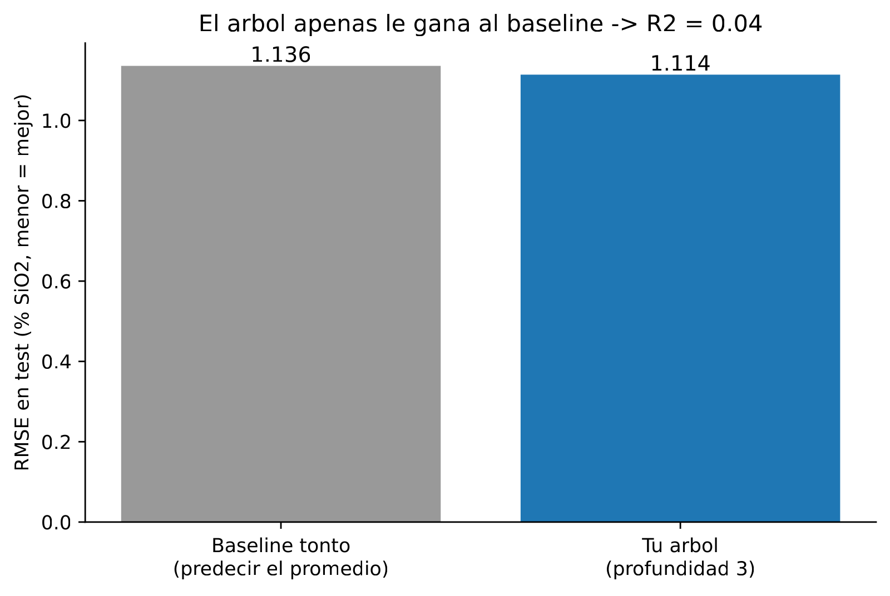
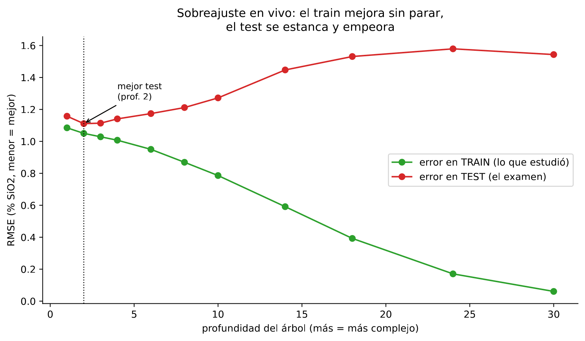
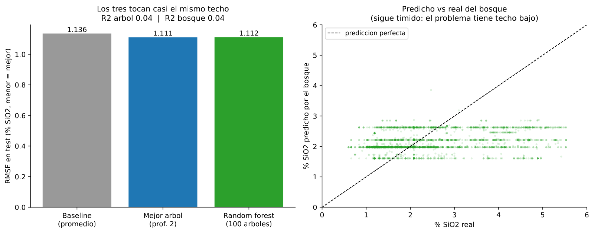
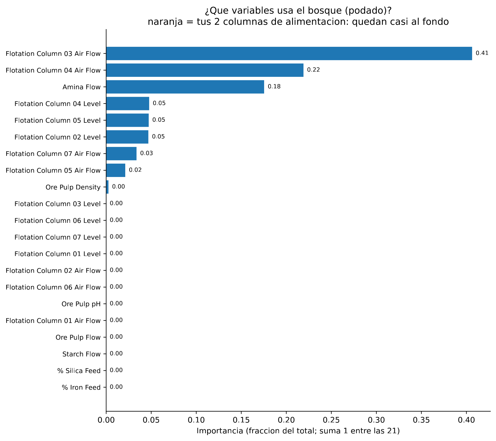

En 30 segundos
- R² 0,04 en prueba. Un árbol, un árbol podado y un bosque de 100 árboles caen los tres en el mismo sitio.
- El techo lo pone el problema, no el algoritmo. Cuando tres modelos distintos empatan, deja de ser culpa del modelo.
- El sobreajuste, medido en vivo. A profundidad 30 el error de entrenamiento baja a 0,061 y el de prueba sube a 1,543. El modelo memoriza.
- La señal está donde decía el módulo 1: aire de las columnas 3 y 4, más la amina. Las dos columnas de alimentación tienen importancia 0,000.
- Ojo con el baseline de aquí. Predecir siempre la media es el rival más flojo posible. El módulo 7 pone uno de verdad.
Qué resuelve este módulo
Aquí se entrena el primer modelo del proyecto y se aprende a calificarlo. Un árbol de decisión, que es el modelo más fácil de leer que existe: una cadena de preguntas de sí o no.
También aparece el problema que persigue a todo el machine learning. Si dejas crecer al árbol, memoriza. Acierta el 100 % de lo que ya vio y no sirve para nada nuevo.
Y sale el resultado que marca el resto del proyecto. Con evaluación temporal honesta, el techo está en R² 0,04. No se mueve por cambiar de algoritmo.
Antes de la teoría: un ejemplo de juguete
Seis lotes procesados. De cada uno se sabe el caudal de aire de la columna y la sílice que salió.
| Lote | Aire (Nm³/h) | % SiO₂ |
|---|---|---|
| 1 | 280 | 5 |
| 2 | 285 | 4 |
| 3 | 290 | 6 |
| 4 | 300 | 1 |
| 5 | 305 | 0 |
| 6 | 310 | 2 |
Paso 1. El error antes de preguntar nada
Sin modelo, la mejor apuesta es la media de todos.
media = (5 + 4 + 6 + 1 + 0 + 2) / 6 = 18 / 6 = 3El error se mide sumando el cuadrado de cada fallo.
error = (5-3)² + (4-3)² + (6-3)² + (1-3)² + (0-3)² + (2-3)²
= 4 + 1 + 9 + 4 + 9 + 1
= 2828. Ese es el punto de partida.
Paso 2. Probar un corte
El árbol prueba a partir los lotes en dos grupos. Corte en aire menor que 295.
izquierda (280, 285, 290) -> 5, 4, 6 media 5 error = 0 + 1 + 1 = 2
derecha (300, 305, 310) -> 1, 0, 2 media 1 error = 0 + 1 + 1 = 2
error después = 2 + 2 = 4La ganancia es lo que se ha limpiado.
ganancia = 28 - 4 = 24Paso 3. Probar otro corte, para comparar
Corte en aire menor que 305.
izquierda (280, 285, 290, 300) -> 5, 4, 6, 1 media 4 error = 1 + 0 + 4 + 9 = 14
derecha (305, 310) -> 0, 2 media 1 error = 1 + 1 = 2
error después = 14 + 2 = 16
ganancia = 28 - 16 = 1224 contra 12. El primer corte limpia el doble, así que el árbol se queda con ese. Eso es todo lo que hace un árbol al crecer: prueba todos los cortes posibles, calcula la ganancia de cada uno y elige el mayor. Después repite dentro de cada trozo.
Paso 4. Cómo se califica una predicción
Otro ejemplo, más pequeño. Cinco lotes que salieron todos a 2 % de SiO₂, y un modelo que predijo esto:
| Real | 2 | 2 | 2 | 2 | 2 |
|---|---|---|---|---|---|
| Predicho | 1 | 2 | 2 | 2 | 4 |
| Fallo | −1 | 0 | 0 | 0 | +2 |
Dos formas de resumir esos cinco fallos:
MAE = (1 + 0 + 0 + 0 + 2) / 5 = 3 / 5 = 0,6
MSE = (1 + 0 + 0 + 0 + 4) / 5 = 5 / 5 = 1,0
RMSE = raíz de 1,0 = 1,0MAE 0,6 y RMSE 1,0 sobre los mismos fallos. La diferencia es el lote que falló por 2. El MAE lo cuenta una vez. El RMSE lo eleva al cuadrado y le da mucho más peso.
Paso 5. Qué acaba de pasar
Ya están las dos piezas del módulo. El árbol elige sus cortes bajando el error al cuadrado. Y el RMSE castiga los fallos grandes más que los pequeños.
De ahí sale una regla práctica. Si el RMSE es mucho mayor que el MAE, hay fallos grandes escondidos. En el archivo real la diferencia será 1,114 contra 0,845.
Glosario
13 términos, en palabras simples
- Árbol de decisión. Un modelo hecho de preguntas de sí o no encadenadas. Cada respuesta lleva a otra pregunta, hasta dar un número.
- Nodo raíz. La primera pregunta, arriba del todo.
- Hoja. Un extremo del árbol. Ahí ya no se pregunta más y se da la respuesta.
- Profundidad. Cuántas preguntas encadenadas hay como máximo desde la raíz hasta una hoja.
- Hiperparámetro. Una perilla que tú fijas antes de entrenar y el modelo no aprende. La profundidad máxima es una.
- MAE. Error absoluto medio. El fallo típico, en las unidades del dato.
- RMSE. Raíz del error cuadrático medio. Como el MAE, pero castigando más los fallos grandes.
- R². Qué fracción de la variación del objetivo explica el modelo. Cero significa que no aporta nada sobre predecir la media. Puede salir negativo.
- Línea base. El rival mínimo que hay que superar. Aquí, predecir siempre la media.
- Sobreajuste. Que el modelo aprenda las particularidades de tus datos concretos en vez de la regla general. Se reconoce porque acierta mucho más en entrenamiento que en prueba.
- Curva de validación. El error en entrenamiento y en prueba dibujados contra una perilla. Enseña dónde está el punto dulce.
- Bosque aleatorio. Muchos árboles entrenados sobre remuestreos distintos. Se promedia entre todos.
- Importancia de variables. Cuánto contribuyó cada columna a los cortes del modelo. No es una prueba de causa.
Paso a paso
Paso 1. Aplicar las decisiones del módulo 1
Antes de entrenar hay que dejar los datos como el módulo 1 dijo. Se quitan las 1.171 filas duplicadas. Se conservan el hueco y el tramo congelado. Se conservan las dos columnas de alimentación. Y se excluye % Iron Concentrate, que era fuga.
Quedan 21 columnas de entrada.
Paso 2. Partir por tiempo, no al azar
El corte va el 1 de agosto. Entrenamiento de marzo a julio, prueba en agosto y septiembre.
Esto no es un detalle. Una partición aleatoria mete horas contiguas en los dos lados, y las horas contiguas se parecen. El modelo aprobaría copiando de su vecina.
Paso 3. Entrenar un árbol corto y leerlo
Profundidad 3 a propósito. Un árbol de profundidad 3 tiene ocho hojas como mucho, así que se puede dibujar y leer en voz alta.
Leerlo importa tanto como entrenarlo. Si la primera pregunta del árbol no tiene sentido metalúrgico, hay algo mal en los datos.
Paso 4. Calificarlo contra una línea base
Un R² suelto no dice nada. Hace falta compararlo con el rival mínimo, que es predecir siempre la media del entrenamiento.
Paso 5. Buscar el punto dulce de la profundidad
Se entrena el mismo árbol con profundidades crecientes. Se dibuja el error de entrenamiento y el de prueba en la misma gráfica. Ahí el sobreajuste se ve, en vez de suponerse.
Paso 6. Probar si muchos árboles arreglan lo que uno no pudo
Un bosque aleatorio entrena cien árboles sobre remuestreos distintos y promedia. Si el problema fuera la varianza de un solo árbol, el bosque lo notaría.
El código, por partes
Paso 1. Preparar los datos y partirlos por tiempo
from prepare_data import get_train_test
X_train, X_test, y_train, y_test, feats = get_train_test()
print(f"Features: {len(feats)} (excluye objetivo y % Iron Concentrate por fuga)")
print(f"Train: {len(X_train):,} filas -> mar a jul")
print(f"Test: {len(X_test):,} filas -> ago a sep")línea por línea, 3 entradas
from prepare_data import get_train_test- Trae una función escrita antes en el proyecto, en vez de repetir el código de limpieza en cada script.
X_train, X_test, y_train, y_test, feats =- Reparte los cinco resultados de la función en cinco nombres de una vez.
X- Por convención, la tabla de entradas. La
yes lo que se quiere predecir.
Features usadas: 21 (excluye objetivo y % Iron Concentrate por fuga)
Train: 563,482 filas (77%) -> mar a jul
Test: 172,800 filas (23%) -> ago a sepPaso 2. Entrenar el árbol y calificarlo
from sklearn.tree import DecisionTreeRegressor
from sklearn.metrics import r2_score, root_mean_squared_error
tree = DecisionTreeRegressor(max_depth=3, random_state=0)
tree.fit(X_train, y_train)
print(f"RMSE test: {root_mean_squared_error(y_test, tree.predict(X_test)):.3f}")
print(f"R2 test: {r2_score(y_test, tree.predict(X_test)):.3f}")línea por línea, 5 entradas
DecisionTreeRegressor- La versión del árbol que predice un número. Hay otra que predice categorías.
max_depth=3- La perilla: como mucho tres preguntas encadenadas.
random_state=0- Fija el azar interno, para que el mismo código dé siempre el mismo resultado.
.fit(X_train, y_train)- Entrenar. Aquí es donde el árbol prueba cortes y se queda con los mejores.
.predict(X_test)- Pasar por el árbol filas que no vio nunca, y quedarse con lo que dice cada hoja.
Arbol de decision (max_depth=3), objetivo = % SiO2 concentrado
RMSE train: 1.029 | RMSE test: 1.114
R2 train: 0.160 | R2 test: 0.038R² 0,160 en entrenamiento y 0,038 en prueba. Ya se ve la primera señal de sobreajuste, todavía suave.

La raíz pregunta si el aire de la columna 3 baja de 295,85 Nm³/h. Coincide con el módulo 1, que había puesto esa columna entre las correlaciones más fuertes. El modelo y la exploración dicen lo mismo, que es lo que se quería comprobar.
Paso 3. Ver qué puede y qué no puede predecir
import matplotlib.pyplot as plt
sample = X_test.sample(4000, random_state=0)
plt.scatter(y_test.loc[sample.index], tree.predict(sample), s=4, alpha=.3)línea por línea, 3 entradas
.sample(4000, random_state=0)- Coge 4.000 filas al azar. Dibujar 172.800 puntos tapa el patrón y tarda mucho.
plt.scatter(x, y)- Nube de puntos. En el eje horizontal lo real, en el vertical lo predicho.
s=4, alpha=.3- Puntos pequeños y semitransparentes, para que se vea dónde se amontonan.
Figures written:
RMSE test: 1.114 | R2 test: 0.038
- fig_m2_arbol.pdf
- fig_m2_arbol_pred_vs_real.pdf
Esa figura enseña una limitación que no se ve en las métricas. El árbol tiene ocho hojas, así que solo puede dar ocho valores distintos. El objetivo real va de 0,60 a 5,53 de forma continua.
Paso 4. Compararlo con el rival mínimo
baseline = [y_train.mean()] * len(y_test)
print(f"Modelo RMSE {root_mean_squared_error(y_test, tree.predict(X_test)):.3f}")
print(f"Baseline RMSE {root_mean_squared_error(y_test, baseline):.3f}")línea por línea, 1 entrada
[y_train.mean()] * len(y_test)- Una lista con la media repetida tantas veces como filas de prueba. Es el modelo más tonto posible.
RMSE=1.114 MAE=0.845 R2=0.038
Baseline RMSE=1.136 MAE=0.908

De 1,136 a 1,114. El modelo mejora al baseline en 0,022, que es un 2 %. Y ahí está la comparación de las dos métricas del ejemplo de juguete: RMSE 1,114 contra MAE 0,845. Hay fallos grandes escondidos.
Paso 5. Ver el sobreajuste en vivo
for depth in [1, 2, 3, 4, 6, 8, 10, 14, 18, 24, 30]:
m = DecisionTreeRegressor(max_depth=depth, random_state=0).fit(X_train, y_train)
print(f"{depth:5} | {root_mean_squared_error(y_train, m.predict(X_train)):.3f}"
f" | {root_mean_squared_error(y_test, m.predict(X_test)):.3f}")línea por línea, 2 entradas
for depth in [...]:- Repite el bloque una vez por cada profundidad de la lista.
.fit(...) encadenadoDecisionTreeRegressor(...).fit(...)crea y entrena en una sola línea, porquefitdevuelve el modelo ya entrenado.
depth | rmse_train | rmse_test
1 | 1.085 | 1.158
2 | 1.050 | 1.111
3 | 1.029 | 1.114
4 | 1.007 | 1.141
6 | 0.950 | 1.174
8 | 0.869 | 1.212
10 | 0.786 | 1.272
14 | 0.591 | 1.447
18 | 0.393 | 1.531
24 | 0.171 | 1.579
30 | 0.061 | 1.543
Mejor profundidad en test: 2 -> RMSE 1.111
Esta tabla es el sobreajuste entero en once líneas. El error de entrenamiento cae de 1,085 a 0,061, casi cero. El de prueba toca fondo en 1,111 y después empeora hasta 1,579.
A profundidad 30 el árbol se sabe los datos de memoria y predice peor que uno con dos preguntas.
Paso 6. Cien árboles en vez de uno
from sklearn.ensemble import RandomForestRegressor
forest = RandomForestRegressor(n_estimators=100, max_depth=3,
n_jobs=-1, random_state=0).fit(X_train, y_train)
print(f"Random forest: R2 {r2_score(y_test, forest.predict(X_test)):.3f}")línea por línea, 2 entradas
n_estimators=100- Cuántos árboles entrena. Cada uno ve un remuestreo distinto de las filas.
n_jobs=-1- Usa todos los núcleos del procesador. Con cien árboles se nota.
Arbol (prof. 2): RMSE 1.111 R2 0.043
Random forest : RMSE 1.112 R2 0.041
El resultado, medido
Qué esperábamos. Que el árbol corto fuera flojo y que el bosque de cien árboles lo mejorara de forma clara. Es lo que pasa en casi todos los tutoriales.
Qué salió. Los tres modelos empatan.
| Modelo | RMSE prueba | R² prueba |
|---|---|---|
| Predecir la media | 1,136 | 0,000 |
| Árbol, profundidad 3 | 1,114 | 0,038 |
| Árbol podado, profundidad 2 | 1,111 | 0,043 |
| Bosque de 100 árboles | 1,112 | 0,041 |
Qué significa. Cuando tres modelos de complejidad muy distinta caen en el mismo sitio, el límite no está en el modelo. Está en el problema. El techo de este proyecto es R² 0,04, y no se sube cambiando de algoritmo.
Los R² de 0,9 que se ven en los tutoriales con este mismo dataset salen de partir al azar. Eso es fuga por vecindad temporal, y el módulo 1 ya explicó por qué.
Dónde está la poca señal que hay

| Variable | Importancia |
|---|---|
| Aire columna 3 | 0,406 |
| Aire columna 4 | 0,219 |
| Amina | 0,175 |
| Nivel columna 4 | 0,048 |
| Nivel columna 5 | 0,047 |
| Nivel columna 2 | 0,047 |
Tres variables se llevan el 80 %, y son las mismas que señaló la correlación del módulo 1. La exploración y el modelo coinciden, que es la señal de que ninguno de los dos está inventando.
Las dos columnas de alimentación quedan en el puesto 15 de 21, con importancia 0,000. Conservarlas no hizo daño y tampoco aportó nada. La decisión del módulo 1 queda comprobada.
Lo que este módulo deja abierto
El baseline de aquí es predecir siempre la media. Es el rival más flojo que existe, porque ignora que el laboratorio ya midió la hora anterior.
Superar a ese baseline por un 2 % no dice mucho. Queda abierta la pregunta de contra qué habría que comparar de verdad. El módulo 7 la contesta con un número. Y ese número cambia la lectura de todo lo que viene en medio.
Ojo
- Tres modelos que empatan no son tres fracasos. Son una medición del problema. Cambiar de algoritmo cuando pasa esto es perder el tiempo.
- El R² de entrenamiento no sirve para decidir nada. A profundidad 30 vale casi 1 y el modelo es inútil. Solo cuenta el de prueba.
- La profundidad se elige mirando datos, no por defecto. Aquí el punto dulce es 2, que es mucho menos de lo que nadie habría puesto a ojo.
- La importancia de variables depende del modelo. Un bosque profundo reparte la importancia de otra manera. Aquí se usó el podado, que es el que generaliza.
- La importancia no es causa. Dice de qué se agarró el modelo, no qué mueve el proceso.
- Un árbol solo da tantos valores distintos como hojas tiene. Con profundidad 3 son ocho, para un objetivo que es continuo.
- Cuidado con el baseline flojo. Predecir la media es fácil de batir y no demuestra casi nada.
Puente metalúrgico
Un árbol de decisión es un árbol de decisión de planta, del tipo que ya está colgado en la sala de control. Si el pH baja de 9,5, sube la cal. Si la ley de alimentación cae, ajusta la dosificación. Preguntas encadenadas que acaban en una acción.
El sobreajuste tiene su equivalente exacto en calibración. Una curva de calibración ajustada con un polinomio de grado alto pasa por todos los patrones. Y luego le pega un disparate a una muestra nueva. Se ajustó al ruido de los patrones, no a la relación.
Y el resultado del módulo se lee como una prueba de flotación de laboratorio. Si tres esquemas distintos de reactivos dan la misma recuperación, el límite no está en el esquema. Está en la liberación del mineral. Cambiar de reactivo no arregla una molienda insuficiente.
Repaso
Tres modelos distintos dan R² alrededor de 0,04. ¿Qué se concluye?
Que el límite lo pone el problema, no el modelo. Un árbol de tres preguntas, un árbol podado a dos y un bosque de cien árboles tienen capacidades muy distintas. Si los tres caen en 1,11 de RMSE, la diferencia entre ellos no es lo que está atascando el resultado.
La conclusión práctica es dejar de probar algoritmos. Lo que hay que atacar es la información disponible: variables nuevas, otro horizonte de predicción, u otra forma de plantear la pregunta. Eso es lo que hacen los módulos siguientes.
El error de entrenamiento a profundidad 30 es 0,061 y el de prueba 1,543. Explica qué pasó.
El árbol memorizó. A profundidad 30 puede hacer tantas preguntas encadenadas que acaba aislando grupos diminutos de filas, casi una hoja por caso.
Sobre los datos que ya vio acierta casi perfecto, y por eso el error de entrenamiento baja a 0,061. Pero lo que aprendió son las particularidades de esas filas concretas, no la regla general. Con horas nuevas falla más que un árbol de dos preguntas. Por eso la única curva que importa es la de prueba.
¿Por qué la partición es por fecha y no al azar?
Porque las horas contiguas se parecen mucho entre sí. Con una partición aleatoria, la hora de las 14:00 puede caer en entrenamiento y la de las 15:00 en prueba.
El modelo entonces no predice: reconoce una situación casi idéntica que ya vio. El R² sube a valores de 0,9 y no significa nada, porque en planta el futuro nunca está en el entrenamiento. La partición temporal reproduce la situación real, donde el modelo tiene que hablar de meses que no existían cuando se entrenó.
Las dos columnas de alimentación salen con importancia 0,000. ¿Fue un error conservarlas?
No, fue la forma correcta de decidirlo. En el módulo 1 la correlación de esas columnas con el objetivo era de 0,08 y 0,07 en valor absoluto, así que se sospechaba que aportaban poco.
Sospechar no es medir. Conservarlas costaba dos columnas de 21 y permitió que el propio modelo las juzgara. El bosque las dejó en el puesto 15 de 21 con importancia cero, lo cual confirma la sospecha con un segundo método independiente. Tirarlas por adelantado habría sido una decisión sin comprobar.
El modelo mejora al baseline en un 2 %. ¿Es un buen resultado?
No se puede saber todavía, porque ese baseline es demasiado flojo. Predecir siempre la media ignora una información que la planta ya tiene: el laboratorio midió la hora anterior.
Un rival honesto tendría que usar esa información. La pregunta correcta no es si el modelo supera a la media, sino si supera a repetir el último análisis. Este módulo la deja abierta a propósito y el módulo 7 la contesta. La respuesta cambia cómo se lee todo el proyecto.